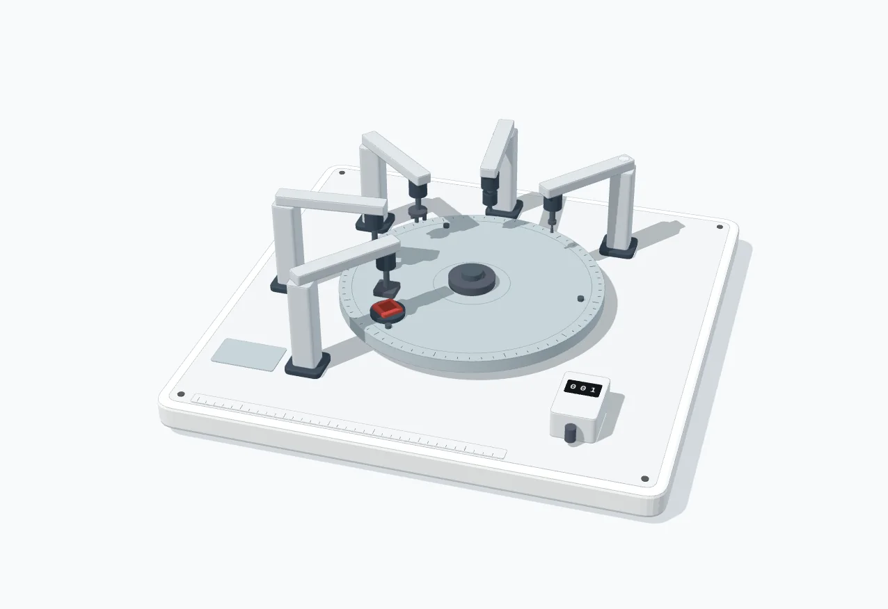

<div class="ag-fig" id="fig-why-chip-design-takes-18-months"><figure class="fig"><div class="fig-plate" tabindex="0" role="img" aria-label="An indexing turntable carries a die through five stations: Floorplan, Place, CTS, Route and Timing check. When the timing check fails its lamp lights and the die is carried all the way round to Floorplan again, while a tally counter on the front counts each loop."><picture class="fig-poster"><source media="(max-width:560px)" srcset="../../assets/figures/why-chip-design-takes-18-months-narrow.webp" width="716" height="644"></picture><span class="fig-corner" data-corner="fig">Fig 2</span><span class="fig-corner" data-corner="title">The iteration loop</span><span class="fig-corner" data-corner="hint"></span><span class="fig-corner" data-corner="readout" data-readout>loop 1 · Floorplan</span></div><figcaption class="fig-keys"><span class="fig-key" data-mark="body">Five stations of the physical design flow</span><span class="fig-key" data-mark="red">Timing check failed: round again</span></figcaption></figure></div>